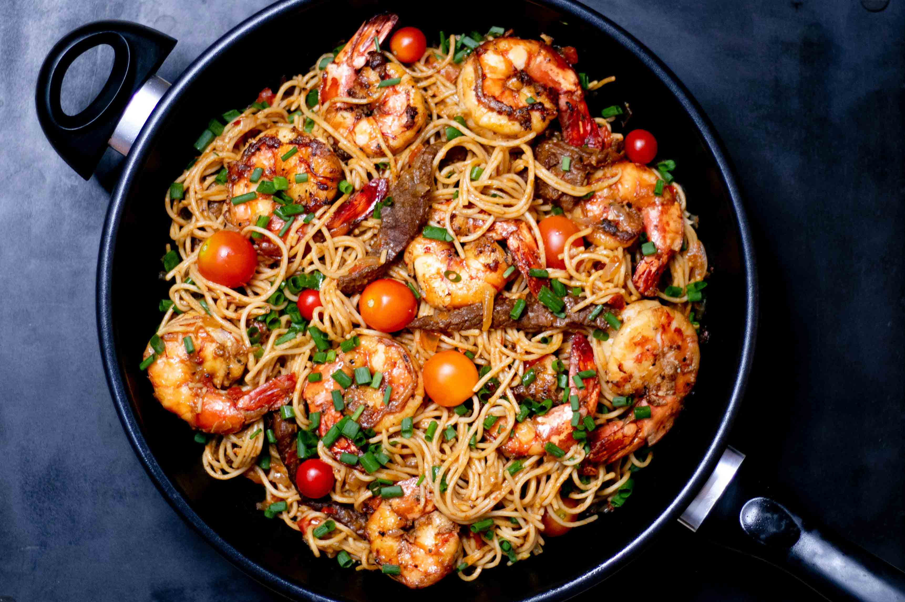

Welcome to my blog!
I'm Linn, a frontend-development student who also have a passion for food and cooking, as well as programming. This will be the place where I'll share my recipees, as well as the stories behind them.
A project long in the making
Like most people I've come to embrace a lot of my hobbies during the ongoing pandemic, since we're all spending a lot more time at home. A lot of mine is in the food-making category. Although it's a life-long interest, I felt a need for gathering recipees somewhere after experimenting more with fermentation, slow cooking and baking.
I've been on a lot of different diets the past years, where most of them are not sustainable unless you cook everything from scratch. In that regard, I'm still focusing on not using any prosessed foods (apart from dairy), using a lot of spices and vegetables in addition to meat or fish. For this to not be too time-consuming, the solution has been big batches of dishes, preferrably slow-cooked.
In addition to cooking I've also picked up sourdough baking. The recipes on this blog come from experimenting with hydration rate, rising-time, amounts of sourdough starter, folding, and optimal amounts of ingredients. Don't be intimidated though, my goal is to have foolproof recipes, as long as you have a active sourdough starter.
One of the processes I love the most, is fermenting and conserving vegetables. Not only does it taste amazing with (almost) everything, but it's also really good for your stomach and health!